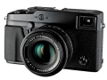

器材库 > APS及其以下画幅可换镜头数码相机 > X-Pro1

规格总览
产品类型
APS画幅可换镜头数码相机
发布日期
2012-01-10
影像规格
影像传感器
X-Trans CMOS
影像传感器尺寸
23.6 x 15.6 mm
有效像素
1630万
影像处理器
EXR Processor Pro
最大解像度
4896 x 3264
静态图像尺寸
L : (3:2) 4896 x 3264 / (16:9) 4896 x 2760 / (1:1) 3264 x 3264；M : (3:2) 3456 x 2304 / (16:9) 3456x 1944 / (1:1) 2304 x 2304；S : (3:2) 2496 x 1664 / (16:9) 2496 x 1408 / (1:1) 1664 x 1664
静态图像格式
JPEG, RAW, RAW+JPEG
画幅比
3:2, 4:3, 16:9
短片尺寸
1920 x 1080 分辨率, 1280 x 720 分辨率 (24 帧/秒)
短片格式
MPEG4-AVC/H.264
镜头和对焦
镜头卡口
Fujifilm XF
对焦系统类型
TTL相位检测
对焦模式
单幅 AF / 连续 AF / MF 距离指示灯
所选自动对焦点显示
区域/多重
曝光控制
测光系统
256 区 TTL 测光、多重测光/点测光/平均测光
测光模式
中央重点测光, 多分区评价测光, 点测光
曝光模式
P（程序自动曝光）, A（光圈优先自动曝光）, S（快门速度优先自动曝光）, M（手动测光曝光）
快门类型
焦平面快门
快门速度
（P 模式）1/4 秒至 1/4000秒，（所有其它模式）30 秒至 1/4000秒
曝光补偿
±2EV以1/3EV级调整
ISO感光度
200, 400, 800, 1600, 3200, 6400, 自动, 可扩展至12800, 可扩展至100, 可扩展至25600
白平衡
日光, 白炽灯, 荧光灯H, 阴影, 自动, 手动白平衡, 水下, 荧光灯L
自拍
10秒, 2秒
连拍
最多6帧/秒
闪光灯
闪光模式
自动, TTL, 慢速同步, 减轻/消除红眼, 强制闪光, 禁止闪光, 减轻红眼慢速同步
取景器/显示屏
取景器
混合式取景器
取景范围
100%
LCD类型
TFT LCD
LCD尺寸
3.0英寸
LCD像素
123万
文件输入/输出
存储卡
SD/SDHC, SDXC
数据接口
USB2.0
视频/音频接口
HDMI 输出
电源
电池
一块NP-W126锂离子充电电池
机身规格
材质
镁合金
颜色
黑色
尺寸
139.5×81.8×42.5mm
重量
400g
水柔2013-09-23 07:114.31 分
操作性 4.00功能性 4.50美观性 5.00趣味性 5.00耐用性 4.50性价比 2.50解像力 4.50色彩还原 4.50
爱折腾2013-07-04 16:424.63 分
操作性 4.00功能性 4.50美观性 5.00趣味性 4.50耐用性 5.00性价比 4.00解像力 5.00色彩还原 5.00
laoxiong2013-05-23 13:194.63 分
操作性 4.50功能性 5.00美观性 5.00趣味性 4.00耐用性 4.50性价比 4.00解像力 5.00色彩还原 5.00
camel19582013-02-06 02:303.13 分
操作性 3.50功能性 1.00美观性 4.00趣味性 2.00耐用性 4.50性价比 1.00解像力 4.50色彩还原 4.50
Pancras2013-01-24 09:354.63 分
操作性 4.50功能性 4.50美观性 5.00趣味性 5.00耐用性 4.50性价比 4.00解像力 4.50色彩还原 5.00
雾i江南2013-01-10 10:414.56 分
操作性 5.00功能性 4.50美观性 5.00趣味性 5.00耐用性 4.50性价比 3.50解像力 4.50色彩还原 4.50
爱折腾2012-12-02 20:44
jasonzc2012-10-15 11:194.69 分
操作性 4.50功能性 5.00美观性 4.50趣味性 5.00耐用性 4.50性价比 4.00解像力 5.00色彩还原 5.00
jasonzc2012-06-20 18:07
zc19422012-04-20 10:444.38 分
操作性 5.00功能性 5.00美观性 5.00趣味性 5.00耐用性 3.00性价比 3.00解像力 4.00色彩还原 5.00
燕山夜话3172012-03-26 20:384.81 分
操作性 4.50功能性 5.00美观性 5.00趣味性 5.00耐用性 5.00性价比 4.00解像力 5.00色彩还原 5.00
jiaozhibov2012-03-24 16:504.5 分
操作性 5.00功能性 4.50美观性 4.50趣味性 4.50耐用性 4.00性价比 3.50解像力 5.00色彩还原 5.00
产品图 / 样片
评测 / 相关文章
- 详细内容 （存档）
- 将复古进行到底！富士X-Pro1详尽评测 （存档）
- 现场直击—试用富士X-Pro1 （存档）
- ［试用］X-Pro1 + XF55-200mm拍演出 （存档）
- ［资讯］富士X系列数码相机及变焦镜头更新固件 （存档）
- ［试用］xpro品镜 谈摄影谈器材谈人生 （存档）
- ［试用］从X100到X10到X-PRO1到X-E1到X100S （存档）
- ［资讯］DIY：为X-Pro1制作红木手柄 （存档）
- ［资讯］富士公布X-Pro1/X-E1最新固件 （存档）
- ［资讯］提升AF性能 富士X-Pro1/X-E1固件升级公告 （存档）
- ［资讯］富士XF 55-200/3.5-4.8 R LM OIS样片欣赏 （存档）
- ［试用］X-Pro1拍摄塞舌尔美景 （存档）
- ［资讯］日本JCII评选出11款2012年日本历史性相机 （存档）
相关文章
- ［试用］X-Pro1 + XF55-200mm拍演出 （存档）
- ［资讯］富士X系列数码相机及变焦镜头更新固件 （存档）
- ［试用］xpro品镜 谈摄影谈器材谈人生 （存档）
- ［试用］从X100到X10到X-PRO1到X-E1到X100S （存档）
- ［资讯］DIY：为X-Pro1制作红木手柄 （存档）
- ［资讯］富士公布X-Pro1/X-E1最新固件 （存档）
- ［资讯］提升AF性能 富士X-Pro1/X-E1固件升级公告 （存档）
- ［资讯］富士XF 55-200/3.5-4.8 R LM OIS样片欣赏 （存档）
- ［试用］X-Pro1拍摄塞舌尔美景 （存档）
- ［资讯］日本JCII评选出11款2012年日本历史性相机 （存档）
- ［资讯］富士官方宣布停产众多产品 （原站已下线）
- ［试用］各有各的味儿 富士X-Pro品镜 （原站已下线）